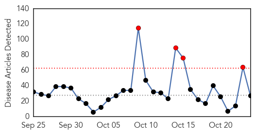
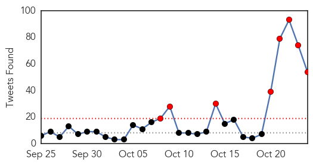
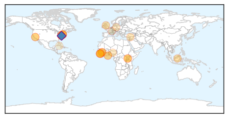
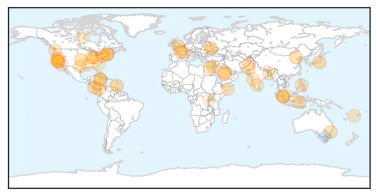

Ebola
30-Day Web Trend
4 alerts, 0 warnings

30-Day Twitter Trend
12 alerts, 0 warnings

Article Locations
Article Confidences

Top Articles:
- 1.000
- How a team of scientists in Borneo are working up to stop the next pandemic
- 1.000
- Mystery Deaths in Sierra Leone Spread Fear of Ebola Relapses
- 1.000
- Ebola nurse Pauline Cafferkey 'critically ill' in hospital
- 0.999
- Sierra Leone Struggles With Ebola Survivors' Health Complications
- 0.999
- 5 People Under Surveillance Over Ebola
- 0.999
- Can Ebola Survive in a Man's Semen?
- 0.999
- Mystery deaths in Sierra Leone spread fear of Ebola relapses
- 0.998
- United Kingdom nurse critically ill after Ebola infection returns
- 0.984
- Scottish Ebola nurse 'recovering'
- 0.984
- Why Billions in Foreign Aid Failed to Prevent Ebola Outbreak — NOVA Next
- 0.979
- Nurse Kaci Hickcox Sues Chris Christie For Civil Liberties Violations During Ebola Quarantine
- 0.978
- United States nurse quarantined over ebola fears sues
- 0.935
- Nurse quarantined over Ebola fears sues Gov. Chris Christie
- 0.899
- FG, ECOWAS to establish Centre for Disease Control
- 0.874
- Ebola Nurse Sues Chris Christie
- 0.863
- Ebola nurse sues Chris Christie
- 0.798
- Page not found • Newslines
- 0.768
- Nurse quarantined over Ebola fears sues Gov. Chris Christie
- 0.761
- UN: More studies needed on new malaria shots before using it - Crescent-News
- 0.759
- Jim Campbell : "It is high time to stop viewing public health as nothing but expense: it is an economic motor"
- 0.732
- Gilead Provides Update on Investigational Compound, GS-5734, for the Treatment of Ebola Virus Disease
- 0.700
- FG to Establish Regional Centre for Disease Control in Nigeria
- 0.687
- Ebola Nurse Sues Chris Christie
- 0.660
- Bad science & toxic politics; Misstep that ruined Ghana’s Ebola Vaccine Trial
- 0.634
- Deadly Viruses and Saving Lives
- 0.582
- Nurse who was quarantined during Ebola scare sues Gov. Chris Christie
- 0.513
- Castro Pocketed WHO Funds Destined for Ebola Health Workers
Top Tweets:
- 0.995
- ebola 0 - https://t.co/D6KsWZuN3n ebola
- 0.993
- United States nurse quarantined over ebola fears sues - https://t.co/mZCCq3DzqD ebola
- 0.991
- US nurse quarantined over ebola fears sues - https://t.co/ebh2hMvwg1 ebola
- 0.991
- Liberia: Health complications threaten Ebola survivors' lives - https://t.co/xIlBnjgIzO ebola
- 0.991
- Ebola-Z: Stuttgart am Abgrund (Zombie-Thriller) - https://t.co/bP6ApjLRGr ebola
- 0.989
- Effective Ebola vaccine - https://t.co/ulmlmNr1ha ebola
- 0.987
- USA nurse quarantined over ebola fears sues - https://t.co/5JXRU2g1jM ebola
- 0.986
- Insight into a Humanitarian Crisis: The Ebola Outbreak - https://t.co/SiG8MsL8P5 ebola
- 0.983
- Ebola virus can live up to nine months in semen: CDC - https://t.co/IxcD7BHWeR ebola
- 0.983
- Ebola virus can live up to nine months in semen: CDC - https://t.co/8w2NG9CNyn ebola
- 0.980
- Reporter - Stigmatized: Life after Ebola - https://t.co/xuFje2iZeg ebola
- 0.979
- Nurse sues over Ebola lockdown - https://t.co/bEZr0OcAZn ebola
- 0.977
- Looking Back at the Ebola Outbreak - https://t.co/Wv5PJp0EXV ebola
- 0.976
- New technology for diagnosing Ebola - https://t.co/Kfx7hD6jiE ebola
- 0.976
- Flu season: An epidemic every year - https://t.co/ycKlVwlAsJ ebola
- 0.971
- Nurse Sues State Claiming Ebola Quarantine Violated Rights - https://t.co/8LkVIsZuup ebola
- 0.968
- Nurse who contracted Ebola hospitalized - https://t.co/tBXhXA2Jke ebola
- 0.965
- An Ebola ill Scottish nurse again hospitalized - https://t.co/EscwIAlK9V ebola
- 0.964
- Nurse who was quarantined during Ebola scare… - https://t.co/fwu1lUXkJu ebola
- 0.956
- Ebola Nurse Sues Chris Christie - https://t.co/OVfsEI8kuf ebola
- 0.953
- Nurse Quarantined Over Ebola Has No Plan To Sue - https://t.co/8lHRATRjzs ebola
- 0.951
- Ebola nurse sues Chris Christie - Washington Examiner https://t.co/xjLKCAOx8j ebola EVD
- 0.950
- Loss, Health, & Money: Ebola Survivors' Greatest Concerns - https://t.co/a6BQOTfxt9 ebola
- 0.949
- Condition of Scottish Nurse Suffering From Ebola Relapse Deteriorates - https://t.co/3NxH78J4fP ebola
- 0.948
- Kaci Hickox and the Ebola panic, 1 year later - https://t.co/gxXh9vKlTx ebola
- 0.936
- Nurse Quarantined During Ebola Panic Sues Chris Christie - 5 hours ago - https://t.co/pRZKf7cO4k ebola
- 0.935
- Health Secretary offers prayers for Ebola nurse Pauline Cafferkey - https://t.co/PrzdQttNl9 ebola
- 0.934
- Ebola-hit nurse 'critically ill' in London hospital - https://t.co/Xe0ZSUPhRo ebola
- 0.932
- Doctor to patient: An Ebola survivor's odyssey - https://t.co/KXESswu4JF ebola
- 0.931
- Ebola: what it teaches us about medical ethics. A response to Angus Dawson - https://t.co/4sfLX90XAl ebola
- 0.930
- Ebola affected Nurse from the United Kingdom in critical condition - https://t.co/Q9rYE35hNG ebola
- 0.930
- British athletes run in Sierra Leone marathon to raise cash for Ebola orphans - https://t.co/fLNqI0P4D6 ebola
- 0.916
- Nurse Who Had Ebola Re-hospitalized and Now Critically Ill - https://t.co/W9m7booy56 ebola
- 0.916
- Nurse Who Had Ebola Re-hospitalized and Now Critically Ill - https://t.co/V1mZk1MLhw ebola
- 0.916
- Nurse Kaci Hickox sues Gov. Christie over Ebola quarantine - https://t.co/z7xnhXR5FJ ebola
- 0.912
- Ebola may persist in semen for nine months, study shows - https://t.co/uJNkiBUa96 ebola
- 0.912
- Bill Spadea: Throw out the Ebola nurse's lawsuit (Watch) - https://t.co/ZcaxOb4t2O ebola
- 0.911
- Ebola can linger in survivors for 9 months: research - https://t.co/bJJccHDOTP ebola
- 0.903
- United Kingdom nurse critically ill after Ebola infection returns - https://t.co/bW6rHeoHdM ebola
- 0.889
- Physician who survived Ebola celebrates with healthcare staff - https://t.co/VQJEzZt0Zc ebola
- 0.887
- Specialized tests for Liberia Ebola survivors - https://t.co/fzMOlqk3Br ebola
- 0.879
- Ebola la la song speed up - https://t.co/tRfgoT3n7P ebola
- 0.873
- 'Farmers Friend' Conducts First Post-Ebola Training - https://t.co/3zJTpUJhwf ebola
- 0.872
- Bad science & toxic politics; Misstep that ruined Ghana's Ebola Vaccine Trial - https://t.co/oo8JG0B3w2 ebola
- 0.863
- Condition of hospitalized Ebola nurse in UK worsens - https://t.co/RLrANjCb4f ebola
- 0.857
- FDA scientist talks "new normal" of Ebola, TEDxUSU excites - The Herald Journal https://t.co/holxgegBMj ebola EVD
- 0.855
- Ebola nurse Pauline Cafferkey 'critically ill' in hospital - https://t.co/Z3sUJOciG8 ebola
- 0.824
- Nurse Kaci Hickox sues Gov. Chris Christie over Ebola quarantine - MSNBC https://t.co/yLuSKrhLxM ebola EVD
- 0.816
- Nurse Kaci Hickcox Sues Chris Christie For Civil Liberties Violations During Ebola Quarantine - https://t.co/4dZcU6rHMh ebola
- 0.808
- When cured applicable Ebola patient again in critical condition - https://t.co/QcS64BWCGf ebola
Showing top 50 tweets...
Unknown
30-Day Web Trend
0 alerts, 0 warnings

30-Day Twitter Trend
2 alerts, 0 warnings

Article Locations
Article Confidences
Top Articles:
- 0.985
- Information Page On Legionnaires' Outbreak Lawsuits Launched by Wright & Schulte LLC After 13 Deaths in Quincy Illinois
- 0.979
- Qatar
- 0.976
- Hand Foot and Mouth Disease Could Spike Among Kids
- 0.970
- Typhoid fever under control - Community
- 0.951
- 141 people sick in connection with San Jose restaurant
- 0.917
- Chicago Tribune
- 0.917
- Chicago Tribune
- 0.917
- Chicago Tribune
- 0.917
- Chicago Tribune
- 0.917
- Chicago Tribune
- 0.867
- Experts warn of Chagas' disease spread in Costa RicaThe Tico Times
- 0.852
- Flu spray in short supply
- 0.838
- Moderate year for Lyme disease in northern New England
- 0.838
- Nevada officials hope school break will stop norovirus
- 0.830
- Nobel Prize for medicine and our persistent ancient diseases
- 0.813
- TIMELINE: The #DeadBabiesScandal ... How the hospitals responded
- 0.807
- More than 600 fall ill during Royal Caribbean cruise
- 0.792
- Lyme disease cases drop off in northern New England
- 0.788
- Alzheimer’s symptoms can be managed
- 0.752
- MAJ head says ministry's response to bacteria outbreak raises questions
- 0.751
- WHO experts: Shift in vaccine use needed to eradicate polio
- 0.730
- Islamist candidate killed in Egypt’s Sinai
- 0.730
- Islamic State group claims responsibility for Bangladesh bombings
- 0.722
- UNICEF declares Somalia polio-free « Alshahid Network
- 0.718
- Rash of brain cancer cases in Indiana sparks probe
- 0.707
- Traveller community, inmates riot in southeast France
- 0.702
- Maldives vice president arrested over alleged assassination plot
- 0.702
- Israel, Jordan agree new security measures for flashpoint al-Aqsa mosque
- 0.702
- Monster hurricane Patricia slams Mexico Pacific Coast
- 0.682
- Karoun Cheese Listeria Outbreak Ends After Killing Three
- 0.663
- Cebu News, The Freeman Sections, The Freeman
- 0.657
- FBC News
- 0.656
- Neimann-Pick, Pick at Pune
- 0.643
- 'Arsenic exposure is associated with pediatric pneumonia in rural Bangladesh: a case control study' (Environmental Health)
- 0.642
- Polio in Ukraine: nationwide vaccination campaign needs to start straight away - Ukraine
- 0.630
- No healing touch: Overworked nurses escape to greener pastures
- 0.630
- Ukraine: Polio in Ukraine: nationwide vaccination campaign needs to start straight away
- 0.611
- Did You Touch This Bat? It Has Rabies
- 0.593
- Aghanistan: Death toll from the MSF hospital attack in Kunduz still rising
- 0.587
- Georgetown County School District: 24 Andrews, Rosemary students treated for skin conditions resulting from flood water
- 0.567
- WDAM-TV 7-News, Weather, Sports-Hattiesburg, MS
- 0.557
- U.S. Citizens March on CDC Headquarters in Atlanta to Protest Vaccine Science Corruption
- 0.538
- Indonesia readies warships for haze evacuation
- 0.519
- Indonesia readies warships for haze evacuation
- 0.508
- Binagwaho wins $100,000 Roux Prize News Of Rwanda – Rwanda News
- 0.502
- SFBay :: San Francisco Bay Area News and Sports
Top Tweets:
- 0.815
- “We have successfully identified flu outbreaks six weeks or more ahead of the Centers for Disease Control" https://t.co/JjEsHImscC
- 0.780
- RT: Piensa en esto: cuando te regalan un reloj te regalan un pequeño infierno florido, una cadena de rosas, un calabozo de …
- 0.736
- Vivimos en un instante cósmico.
- 0.712
- RT: Grecia siendo un país con unas de las peores economías del mundo no tiene gente haciendo colas todos los días en un supe…
- 0.690
- RT: El avance de un país también se puede medir en las políticas preventivas ante desastres naturales. Ej: México, Chile y …